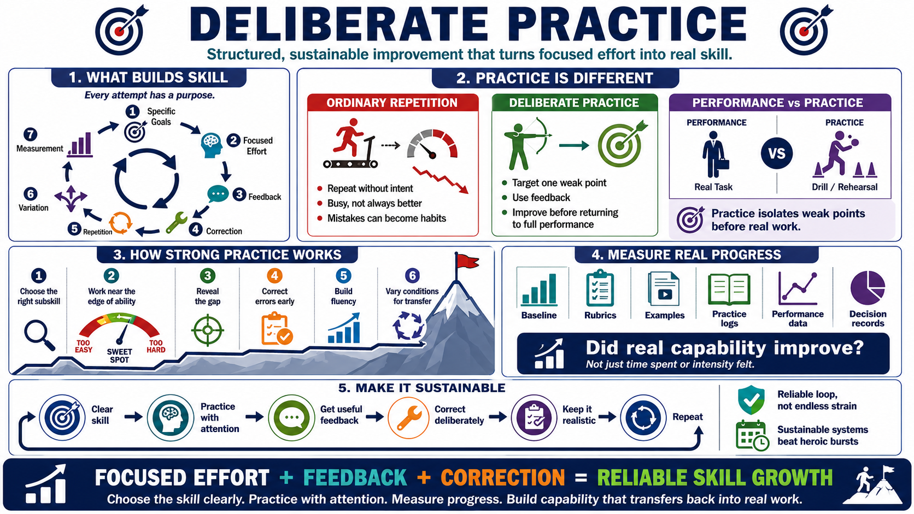

Course Summary and Key Takeaways
Connecting to LMS... Progress: in progress

Narration
Deliberate practice builds skill through specific goals, focused effort, feedback, correction, repetition, variation, and measurement. It is different from ordinary repetition because every attempt has a purpose. It is different from performance because practice creates space to isolate weak points and improve them before the learner returns to the full task.
Strong practice systems target the right subskill and operate near the edge of current ability. They use feedback to reveal the gap between current performance and desired performance. They correct errors before those errors become habits. They repeat the important behavior enough to build fluency and vary the conditions enough to support transfer.
Measurement helps the learner avoid guessing about progress. Baselines, rubrics, examples, logs, performance data, and decision records all provide evidence. The question is not whether practice felt intense or consumed time. The question is whether real capability improved and whether the learner is better prepared to perform when the work matters.
The final takeaway is that deliberate practice is structured, sustainable improvement. It asks learners to choose the skill clearly, practice with attention, seek useful feedback, correct deliberately, and keep the system realistic enough to continue. The goal is reliable skill growth, not endless strain. With the right loop, focused effort becomes capability that can travel back into real work.